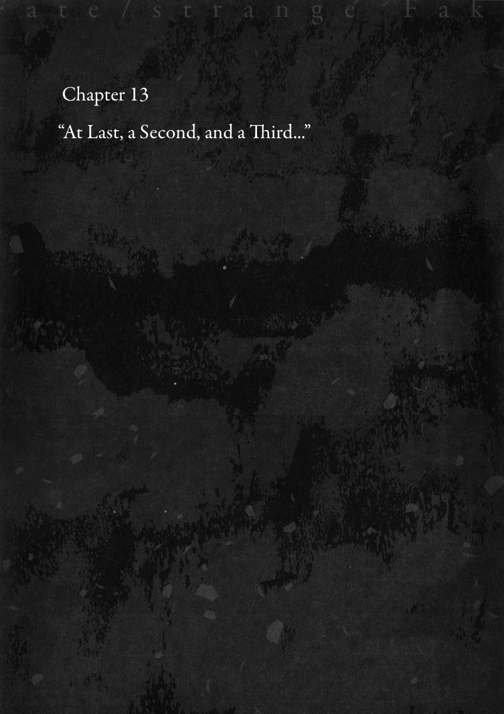
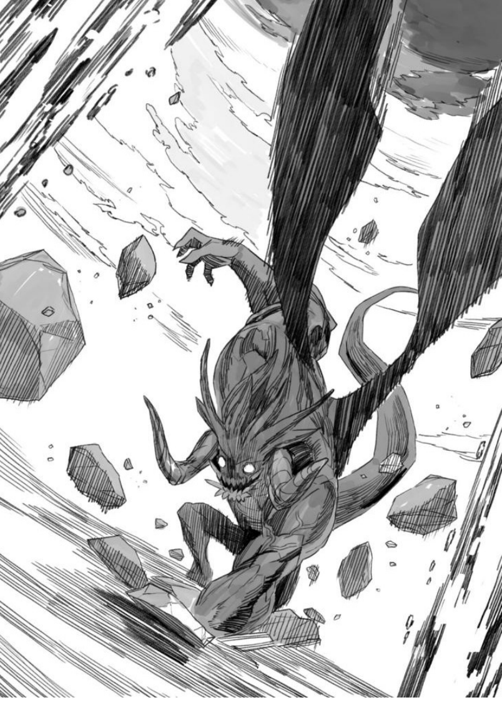

Capítulo 13: Dia 2, noite Enfim, um segundo, e um terceiro...
Dez da noite. Igreja Central de Snowfield.
O Hospital Central de Snowfield ficava do lado oposto ao da delegacia em relação ao Crystal Hill, o maior cassino-hotel da cidade. A igreja erguia-se a pouca distância dali. Apesar da história curta da cidade, ela possuía uma aparência majestosa. Por isso, o local costumava ficar apinhado de fiéis devotos e visitantes em turismo. No momento, porém, havia se tornado um espaço do qual nenhuma pessoa comum pensaria sequer em se aproximar; uma barreira fora instalada para manter a multidão afastada.
Lá dentro, um padre que havia permanecido na igreja depois do anoitecer falou com um sorriso enviesado.
"Não creio que vocês tenham vindo buscar asilo. Embora eu já estivesse querendo dar umas cutucadas naquele chefe de vocês."
Um padre marcado pelo tapa-olho — Hanza Cervantes. Quatro freiras estavam posicionadas ao redor dele. Não vestiam equipamento de combate, mas vigiavam os visitantes prontas para lutar a qualquer momento mesmo com seus hábitos. Isso era natural: quem havia aparecido na igreja era Vera, acompanhada de cerca de outros vinte e cinco membros do Clã Calatin.
O chefe permanecera na delegacia com alguns subordinados, emitindo ordens, mas propusera usar a igreja como parte da operação contra o hospital.
"Entendo as circunstâncias, mas vocês honestamente acreditam que eu daria minha permissão?"
"Não estamos pedindo apoio", respondeu Vera ao Hanza de expressão confusa. "No que diz respeito à nossa operação, gostaríamos que você abrigasse uma pessoa aqui."
"A Mestre inconsciente cujo Servo continua ativo? Naturalmente, sou a favor de lhe conceder santuário como supervisor, como padre e como pessoa, mas só se ela tiver a intenção de se retirar da Guerra do Santo Graal. Neste caso, isso depende de vocês conseguirem ou não negociar com o Servo dela. Estou errado?"
"Não. Dependendo das circunstâncias, acredito que talvez seja necessário eliminar o Servo à força. Nesse caso, não buscaremos sua assistência, pois os acontecimentos excederão seu âmbito de atuação como supervisor."
"Entendo. Tenho a sensação de estar sendo usado com certa elegância, mas bem, suponho que isso faça parte do trabalho de supervisor."
Hanza deu de ombros. Então notou um jovem encarando-o intensamente do lado dos policiais.
"Aliás, quem é ele? Não parece policial."
Diante disso, o tal jovem — Flat — avançou às pressas.
"Ah, prazer em conhecê-lo! Meu nome é Flat. Sou o Mestre de Berserker e estou cooperando com tudo isso. Conto com você, Sr. Supervisor!"
"Oh, enfim um Mestre que me reconhece como supervisor. Hanza Cervantes. O prazer é meu", riu Hanza com autodepreciação.
Flat o examinou da cabeça aos pés e perguntou: "Hmm... Desculpe se eu estiver enganado, ou se isso for rude, mas... o senhor não teve uma luta no estacionamento da delegacia anteontem, Sr. Cervantes? Seu corpo é mais ou menos setenta por cento máquina, certo...?"
"...Oh, dá para perceber?"
"Dá, sim. O fluxo de energia mágica está alterado geometricamente aqui e ali, e eu não entendo como, então deduzi que devia ser algo mecânico! Uau, não tem nada a ver com os bonecos do Rohngall ou da Touko... Incrível! Eu nunca tinha visto um ciborgue antes! O senhor consegue disparar um rocket punch? Ou talvez uma broca...?"
Hanza balançou a cabeça diante do jovem que havia enxergado as peculiaridades de seu corpo.
"Meus punhos não saem voando, e a broca é segredo. Mas um dos meus braços se estica até três metros, e também lança granadas. ...E, entre nós, eu tenho uma motosserra consagrada na perna."
"...Estou profundamente impressionado. Gostaria de apertar sua mão, se o senhor não se importar com um mago da Torre do Relógio!"
"Claro. Você tem bom gosto. Se cansar da magia, converta-se à Igreja Sagrada."
O mago da Torre do Relógio e o executor da Igreja, que em tese deveriam ser inimigos mortais, sorriram um para o outro em aprovação mútua e trocaram um firme aperto de mão.
Ignorando os policiais perplexos, as freiras, postadas em duplas, cochicharam entre si.
"O padre Hanza está mostrando suas cartas a um mago... Será que isso está certo?"
"Ele sempre é assim, então não adianta se preocupar. No fundo, o Hanza é como uma criança."
Em algum lugar escuro.
Bazdilot, tendo abandonado o próprio ateliê no distrito das fábricas, aguardava num esconderijo de reserva preparado pela Família Scladio. Diante de seus olhos, o "comunicador" na forma de uma tábua Ouija começou a se mover, apontando letras do alfabeto para formar frases. Bazdilot confirmou o conteúdo da mensagem e então se dirigiu à escuridão sem o menor traço de expressão.
"Alkeides, você pode se mover?"
No escuro, Alkeides se materializou e, com rica energia mágica correndo por cada centímetro de sua estrutura, falou.
"Claro."
"...Recebi notícias de um 'rato' na polícia. Vamos para o hospital."
Então, com sua habitual voz desprovida de emoção, deu uma ordem a Alkeides.
"...Chegou a hora; preciso que você cuide de uma criança."
"Entendo."
Não houve sinal visível de hesitação. Bazdilot ficou satisfeito com a atitude de Alkeides. Justamente por isso, porém, verbalizou uma dúvida que lhe ocorrera.
"Pode parecer um pouco tarde para perguntar, mas você recuou com obediência demais, mesmo que o acordo com Caster não tivesse desvantagem alguma para você. Eu achei que você mataria aquela deusa a qualquer custo."
Bazdilot, que já havia consumido todos os seus Selos de Comando, não tinha como deter Alkeides. Por essa razão, estava preparado para sacrificar o acordo, quando, para sua surpresa, Alkeides simplesmente guardou o arco.
"...Aquela não era nenhuma deusa que eu conheça."
"Quer dizer, vinha de outro lugar? Ainda assim, a essência dela deve ser mais ou menos a mesma."
"Não, não é isso que quero dizer. Aquilo não era nem um original nem um avatar... Provavelmente era algo como um brado queimado na personalidade de outrem. Uma maldição irritante que atravessou os séculos."
Alkeides começou a caminhar em direção à saída do ateliê temporário, ajustando seu equipamento com frieza.
"Eu desprezo os deuses, mas as maldições que deixam para trás são secundárias. Vou lidar com elas eventualmente, mas não antes daquele semideus que se chama de Rei dos Heróis. Só isso."
Bazdilot fixou o olhar penetrante nas costas de Alkeides e apresentou as vantagens do trabalho para seu Servo.
"Se tudo correr bem, haverá muito menos elementos incertos quando você enfrentar o Rei dos Heróis. E você também poderá difamar o quanto quiser os deuses que lhe tiraram tudo."
Sem sequer olhar para trás, o arqueiro expressou concordância impassível com as palavras do Mestre.
"Isso é óbvio. Eu existo apenas para arrastar os nomes deles pela lama." × ×
A igreja. Telhado.
Parte do teto da igreja central era um terraço plano. Formava um espaço de onde se podia ver as estrelas, um trecho da paisagem noturna e a torre do sino ricamente ornamentada.
Ali, Flat, aguardando instruções, soltou um suspiro de alívio.
"Ainda bem... De algum jeito, as coisas se ajeitaram."
"Temos de agradecer ao seu professor por isso", respondeu Jack, na forma de um relógio de pulso. "As conclusões que ele apresentou ao chefe de polícia e sua habilidade nas negociações que se seguiram só podem ser chamadas de magníficas."
Jack só observara dos bastidores enquanto Lord El-Melloi II, como um detetive de poltrona, organizava o sentido da situação na cidade sem sequer estar ali.
A garota provavelmente estava sendo possuída por seu Servo, com quem talvez tivesse firmado um contrato nas profundezas da própria psique ou em um sonho. A partir do fato de que ela estava contaminada por bactérias criadas pelos Kuruoka, El-Melloi II conjecturara que o Espírito Heroico que ela invocara devia ter relação com patógenos — ou talvez fosse uma existência tratada como símbolo da própria doença numa era em que ainda não existiam os conceitos de bactéria ou vírus —, e que as anomalias irrompendo pela cidade talvez fossem produzidas pela ação extremamente singular de uma magia bacteriana capaz de escolher deliberadamente seus alvos de infecção.
Depois disso, ele conduzira várias negociações com o chefe. Dava para dizer que, mesmo permanecendo na Inglaterra, ele havia penetrado até os bastidores dos mandantes da Guerra do Santo Graal de Snowfield.
"Ninguém na Torre do Relógio consegue superar o professor em investigação e negociação sem usar magia... embora pareça difícil quando o outro lado mistura ameaças no meio..."
Muita coisa devia ter acontecido no passado. Flat apoiou os cotovelos na beirada do terraço e começou a falar num tom nostálgico.
"A Torre do Relógio é um saco com essa história de facções e tudo mais. Para mim, esse tipo de coisa parece ineficiente, então eu realmente não entendo... mas o professor lida bem com isso e ainda faz os oponentes parecerem bem, tudo enquanto comenta o quanto aquilo é ridículo. Pelo que dizem, ele também teve muita dor de cabeça quando assumiu a responsabilidade por mim."
Depois de dizer isso, Flat fez uma breve pausa antes de se dirigir a Jack.
"Espero que a garota no hospital sobreviva."
"Eu também", concordou Jack, antes de de repente fazer uma pergunta.
"...Tem uma coisa me incomodando."
"O que?"
"Por que você está tentando salvar aquela garota?"
"Por quê...?" Flat hesitou, incapaz de responder de imediato à pergunta fundamental. "Você certamente tem uma natureza gentil, pouco parecida com a de um mago. Eu consigo entender que odeie matar uma garota por causa da Guerra do Santo Graal. Ainda assim, quando você vai tão longe a ponto de se expor a outro Mestre — seu inimigo natural —, fico pensando se talvez você também não esteja um pouco desligado dos sentimentos de uma pessoa comum."
"...Se alguém está em apuros, ajudar é só—"
"Não é natural. Até certo ponto, talvez, mas isso certamente não é natural, Mestre. As pessoas não são tão fortes assim. Se elas se tornam fortes, precisam ter um motivo para isso."
Diante disso, Flat assentiu, compreendendo, e então continuou refletindo por um tempo, fitando o céu noturno. Depois, deu um grande aceno de cabeça, como se tivesse chegado a uma conclusão, e abriu a boca.
"É simples. É por causa do professor."
"Ah. Então é influência dele."
"Eu pensei que, se o professor estivesse no meu lugar, ele ajudaria aquela garota mesmo sem ganhar nada em troca. ...Você tem razão, Jack. Não sei por quê, mas o professor é uma pessoa muito forte, justamente para compensar a pouca habilidade dele com magia. E não sou só eu; todo mundo na escola, e até algumas pessoas que o detestam, reconhecem isso."
Flat exibiu um sorriso torto, como se estivesse envergonhado de si mesmo, e então começou a falar com o relógio-Espírito Heroico enrolado em seu pulso esquerdo.
"Há muito tempo... eu cometi um erro enorme e dei um monte de problemas para o professor."
"Pelo que ouço, você vive dando problemas para ele..."
"Sim, mas daquela vez foi em outro nível... Meu amigo Le Chien e eu acabamos nas mãos de um mago chamado Atrum. Eu tinha quase certeza de que íamos morrer."
Flat, que falava sobre a própria morte com espantosa naturalidade, continuou com um sorriso de autoironia.
"Mas o professor assumiu um risco enorme e nos salvou. Ele até pôs na mesa de apostas um instrumento importante para ver seu amigo precioso — alguém que ele quer ver mesmo que precise passar a vida inteira tentando."
Um instrumento para encontrar alguém. Essa expressão estranha fez uma ideia atingir Jack.
Um catalisador de invocação...?
O amigo que aquele professor queria ver era provavelmente o mesmo tipo de existência que Jack agora era — um Espírito Heroico encontrado por ele numa Guerra do Santo Graal. Nesse caso, aquele catalisador tinha um valor que ninguém mais poderia sequer começar a medir. Se ele o colocara em jogo em nome dos próprios alunos, então realmente devia ter um parafuso a menos para ser o professor do Flat.
Enquanto Jack pensava, Flat, que chegara a uma conclusão à sua maneira, prosseguiu, alternando com alguns sorrisos solitários.
"Se isso acabasse sendo só um problema meu, eu abandonaria a garota em nome do meu objetivo. Talvez até tomasse a iniciativa e a matasse como um mago qualquer."
"..."
"Mas antes de ser um mago da família Escardos, eu sou Flat Escardos da Escola El-Melloi."
A Escola El-Melloi.
No instante em que pronunciou esse nome, o traço de solidão desapareceu do rosto de Flat, e ele disparou, numa voz transbordante de convicção:
"Desde que entrei naquela escola, minha vida deixou de ser só um problema meu. Abandonar aquela garota agora significaria trair o professor e todo mundo da escola. Para mim, isso é... tão assustador quanto perder meu objetivo como mago."
"Entendo. Se você diz que é por medo, então não tenho escolha além de aceitar."
Em seguida, Flat fez sua própria pergunta a Jack.
"Por que você não se opõe, Jack?"
"Hmm..."
"Pensando em vencer a Guerra do Santo Graal, não há necessidade alguma de nos darmos ao trabalho de salvar uma garota, certo? Se você fosse totalmente contra isso, eu teria de usar um Selo de Comando, mas você pareceu concordar bem rápido."
Em resposta às palavras de Flat, Jack balançou os ponteiros do relógio de um jeito que parecia dizer: "Ah, é só isso."
"É simples. Eu mesmo fui influenciado pelo seu professor, Lord El-Melloi II."
Quando Flat telefonara para El-Melloi II e recebera uma aula de duas horas, Jack tivera a oportunidade de ter uma breve conversa com o lorde. Quando explicou sua própria natureza como Espírito Heroico e disse que seu desejo para o Graal era descobrir a verdadeira identidade de Jack the Ripper, El-Melloi II se insinuara com facilidade em sua mente com uma voz fluida — quase como se estivesse dando uma aula de magia.
"Creio que a essência de uma pessoa é moldada pelos encontros que ela tem com os outros.
Quem, ou o que, de fato cometeu aqueles assassinatos na Londres do século XIX é uma caixa-preta. Mesmo dentro da Torre do Relógio, as opiniões se dividem enormemente.
"Ainda assim, sou francamente grato por ter surgido diante do Flat uma existência sensata como você. Se aquele meu aprendiz idiota teve alguma influência sobre você, para melhor ou para pior, então creio que é correto dizer que um novo aspecto de Jack the Ripper sem dúvida nasceu.
"Prometo me lembrar de 'você', não como uma lenda urbana ou um Espírito Heroico, mas de qualquer forma que você tenha sido em vida. Prometo me lembrar do você com quem estou falando agora como o Servo do Flat, a existência que lhe mostrou o caminho, mesmo que por pouco tempo.
"Por isso, por favor... cuide do meu aprendiz idiota — do Flat. Eu não tenho Selos de Comando nem nada do tipo; este é só um pedido egoísta meu. Mas, por favor... mantenha-o em segurança por mim."
"Sinceramente, eu já tinha dito isso antes, mas se tivéssemos continuado falando por mais tempo... ele realmente teria me enrolado no dedo. Talvez seja algum tipo de íncubo em forma humana."
Jack, ainda na forma de relógio, deu um sorriso torto ao se lembrar.
"As palavras dele tocaram meu coração. Minha vida também foi tocada um pouco por ele. Só isso."
Ao ouvir isso, Flat abriu um sorriso inocente.
"Então isso quer dizer que você também é aluno da Escola El-Melloi, Jack."
"...Tenho certeza de que ter um serial killer lá só traria problemas."
Flat balançou a cabeça diante da óbvia constatação de Jack.
"Temos um ex-aluno meio parecido, então não acho que vá ser problema."
"...Tenho a sensação de que vai, sim..."
Nesse ponto, o relógio, ainda balançando os ponteiros em sorriso torto, passou de repente a falar com seriedade.
"Ainda falta alguma coisa muito grande em você... Não, não falta... Você provavelmente ainda não percebeu isso, mas existe um grande descompasso entre você e o mundo. Isso chegou a me assustar algumas vezes."
"..."
"No entanto", continuou Jack para o Flat de expressão inquieta, "eu fiquei mais tranquilo. Não porque um mago como aquele seja seu professor, mas porque você sente respeito pelo modo como ele vive. Enquanto tiver esse sentimento, você deve ser capaz de superar esse descompasso."
"...Acho que você tem razão. Eu realmente não entendo muito bem. Mas até que consigo perceber que partes minhas estão fora de sintonia com os magos... e com as pessoas normais."
"Não se preocupe. Todo mundo vive com a sensação de que algo em si está fora de compasso com o mundo. Não sei se devo dizer isso nesta forma, mas não existe relógio que marque a hora perfeitamente sem jamais atrasar ou adiantar por um instante. Só existem pessoas tentando fazer seus relógios coincidirem."
Flat deu uma risadinha ao ouvir isso.
"Talvez sua verdadeira identidade acabe sendo a de um poeta, Jack."
"...Eu disse algo tão frívolo assim?"
"Disse. Quero dizer, você supostamente assinou uma carta para a polícia com 'From Hell'."
"...Você tinha mesmo de lembrar disso." Eles não chegaram a gargalhar em consideração às vítimas, mas Jack e Flat sorriram um para o outro antes de voltar a atenção para o hospital.
"...Deve começar a qualquer momento agora."
"Sim. Afinal, não dá para esvaziar os pacientes internados. Eles vão usar magia de ampla área para fazer os pacientes dormirem e bloquear a percepção dos médicos, para que não vejam a unidade policial invadindo o lugar... Espera. Tem algo errado."
"?"
A voz de Jack fez Flat voltar os olhos para a rua em frente ao hospital. Ele conseguiu ver policiais apontando para alguma coisa e entrando em pânico. Flat dirigiu o olhar para a direção indicada, usando magia para reforçar sua visão... e então viu "aquilo".
Um cão de três cabeças do tamanho de um elefante adulto, hálitos pálidos revolvendo-se em suas bocas e, de pé com tranquilidade sobre seu dorso, um homem vestindo um pano estranho e preparando o arco.
Telhado do Hospital Central. Em cima de uma caixa d'água.
"...Agora um Cérbero? Quem é esse arqueiro?"
Quem observava a enorme besta lá de cima era Jester Karture, de volta à forma de jovem vampiro. Ao que tudo indicava, os ferimentos que recebera de Hanza ainda não haviam cicatrizado — as queimaduras de água benta ainda estavam frescas na pele que aparecia por baixo das roupas.
"Interessante. Que outros heróis e monstros existem nesta Guerra do Santo Graal? Com qual deles devo fazer aquela bela Assassin dançar? Preciso me concentrar e escolher com calma."
Diante do hospital. Main Street.
Por causa das barreiras de ampla área destinadas a manter as pessoas afastadas, Main Street parecia estranhamente deserta aos policiais de patrulha. Mais adiante na rua, porém, algo surgiu para estilhaçar aquela atmosfera solitária.
Era um cão gigantesco, expelindo sopros venenosos pelas presas afiadas de suas três cabeças. Os policiais levaram algum tempo para reconhecê-lo como Cérbero, criatura que já tinham visto tantas vezes em mitos e filmes que haviam perdido o interesse nela. Foi esse o tamanho da distância entre o assombro e o medo que aquela presença lhes inspirava e o Cérbero que existia em sua imaginação.
O ar estava pesado de energia mágica. O arqueiro que se mantinha sobre as costas da criatura, porém, não mostrava sinal algum de estar abalado por aquilo. Se estivesse empunhando uma grande foice em vez de um arco, qualquer um teria gritado, tomando-o pela própria Morte.
O gigantesco cão de guarda de Hades caminhou até os policiais e então parou. Baixou as cabeças e fitou tudo ao redor. Em seguida, o arqueiro em suas costas fez uma pergunta aos oficiais sem fala, numa voz solene.
"...Onde está a criança que abriga um Espírito Heroico?"
O arqueiro já virava o rosto para o hospital enquanto falava. Devia estar perguntando em que ala, em que andar, a garota podia ser encontrada.
"Se dissermos", um dos policiais reuniu coragem e perguntou ao arqueiro, "o que você... vai fazer com ela?"
"Naturalmente, eu a abaterei num assalto frontal, em conformidade com as regras da Guerra do Santo Graal."
Os policiais murmuraram entre si. Aquela existência, cuja aparência lhes transmitia uma força diferente da de um Espírito Heroico comum, aquela presença revestida por uma intimidação que fazia a Assassin com quem haviam lutado no outro dia parecer até dócil, acabava de declarar sua intenção de assassinar "com justiça, num assalto frontal" uma garotinha inconsciente.
"...Que merd—" gritou um dos policiais ao entender o que aquilo significava. Sua voz furiosa foi abafada pelo rugido de uma explosão.
A haste que o arqueiro disparou a título de ameaça perfurou o asfalto, despedaçou uma circunferência de dez metros e criou uma pequena cratera. Vários oficiais próximos foram apanhados pela explosão. Diversos perderam a consciência na mesma hora.
"Não precisam responder; apenas não interfiram."
Então o arqueiro esticou o arco ao máximo.
Os policiais logo perceberam o que ele pretendia fazer. Aquele arqueiro tencionava destruir por completo, usando nada além do próprio arco, o grande hospital de dez andares. Depois de ver a cratera que ele deixara no asfalto com um disparo de advertência, ninguém achou a ideia absurda.
Então, antes que a polícia pudesse se mover para detê-lo, ele lançou um ataque a partir do arco completamente retesado.
"Então era esse o jogo dele!"
Jester Karture percebeu na mesma hora a intenção do arqueiro e destruiu com uma pisada a caixa d'água sob seus pés. Algum poder lhe permitiu controlar livremente a água que jorrou dali e fazê-la saltar na direção da flecha que se aproximava.
Houve uma explosão aquática. Gotas se espalharam como fogos de artifício sob as luzes da cidade. A flecha passou por uma margem mínima, arrancando parte do telhado do hospital antes de desaparecer no céu.
"Francamente. O que foi, polícia? Vou acabar encrencado se vocês não se esforçarem mais."
Jester soltou um sorriso sarcástico e suspirou enquanto torcia pela força policial que ele quase destruíra com as próprias mãos alguns dias antes.
"Kuruoka Tsubaki ficará segura por ora se eu transformá-la em uma das minhas... O problema é que, se eu fizer isso, Assassin não hesitará em matá-la. E isso não teria graça nenhuma."
Depois de terminar de resmungar para si mesmo, Jester percebeu um fato importante e balançou a cabeça.
"Não, com a força dela, o corpo da garota talvez não aguente. Ela morreria antes de ser transformada..."
"...Alguma espécie de demônio?"
Alkeides, montado sobre Cérbero, voltou a atenção para a existência que erguera o espesso escudo de água. Vendo um homem envolto numa aura que não era nem de Espírito Heroico nem de Espírito Divino, ele desceu ao chão com cautela.
"Mate todos que se interpuserem no seu caminho."
Cérbero, o cão de guarda de Hades que ele capturara no passado, fora invocado por meio do Fantasma Nobre King's Order. Alkeides deu instruções à besta gargantuesca que não pertencia a este mundo e examinou com cuidado seu "inimigo" no topo do hospital. Preparou o arco, disposto a destruir seriamente o prédio inteiro por conta própria.
Sua presença não é a de um Servo. Também não é a daquela mulher que se diz deusa. Muito provavelmente é alguma fera parida pelo planeta... um leão da Nemeia em forma humana.
Lembrando-se do leão ao qual pertencera a pele que cobria seu próprio rosto, Alkeides elevou ainda mais sua vigilância. Pensava se deveria materializar mais alguma coisa com King's Order... quando um leve impacto atravessou suas costas. Claro, só pareceu leve para Alkeides — falando corretamente, o golpe tinha força suficiente para atravessar o corpo de um carro blindado.
O que a pele do leão da Nemeia repelira era uma lança arremessada por um dos policiais.
"...Droga... Sacudir isso assim não vale... De novo isso?! Por quê? Por que diabos? Você é outro daqueles Apóstolos Mortos ou sei lá o quê, desgraçado...?!"
Como se em resposta ao grito do policial, o restante da força nas redondezas começou a despejar um após o outro o que pareciam ser Fantasmas Nobres de longo alcance.
"...Sem graça."
Alkeides os dispersou com o arco. O disparo que lançou pelos intervalos entre eles abriu outra cratera na rua.
O que Cérbero está fazendo?
Apesar de ter acabado de lhe dar a ordem para matar, o número de policiais não mostrava sinal algum de diminuir. Na verdade, parecia estar aumentando.
"...O quê?"
Alkeides percebeu que havia, de fato, mais policiais do que antes. Além disso, Cérbero realmente estava obedecendo à ordem recebida. Havia vários corpos humanos em cada uma de suas três bocas. Mais de uma dúzia de oficiais estava prensada sob suas patas. E, ainda assim, eles continuavam resistindo.
Parecia que os próprios oficiais também haviam notado algo estranho na cena.
"E-ei..."
"...Quem são esses caras sendo devorados?"
Alkeides ouviu os murmúrios confusos e franziu a testa. Então...
Mais uma dúzia ou algo assim de policiais apareceu diante de seus olhos e imediatamente saltou sobre Cérbero. Não pareciam portar armas que pudessem ser Fantasmas Nobres. Avançaram contra Cérbero munidos apenas de pistolas e cassetetes. Era quase como se quisessem ser os primeiros a serem devorados.
"Absurdo..."
"Não há nada de absurdo nisso."
Alkeides se virou ao ouvir uma voz atrás de si. Ali estava um policial perfeitamente comum, observando incontáveis outros idênticos a si serem devorados. Ele falou com um sorriso carregado de loucura.
"Eu, originalmente, sou um criminoso que alegava vir do inferno, um assassino cujos pecados estão além de qualquer redenção.
"Ser continuamente roído pelo cão de Hades me cai perfeitamente bem."
O policial se colocou diante de Alkeides enquanto dizia isso. Armado apenas com uma pistola e um cassetete comuns, contra um demônio mais feroz do que o próprio Cérbero.
"Duvido muito, mas, já que você está acompanhado por esse cachorro demoníaco do submundo, não me diga que o próprio Hades se manifestou?"
Num instante, uma fúria sombria envolveu Alkeides. Ele falou ao oficial com uma voz densa de ódio.
"Fracote... Não importa o quanto eu lhe pareça mais poderoso do que você, não me coloque junto daqueles tolos, os deuses. Se cometer o mesmo erro outra vez, sua recompensa será mais profunda que a morte."
"Eu só estava tentando sondá-lo", respondeu o policial com um sorriso destemido. "Peço perdão se fui indiscreto. Entendo. Parece que você de fato não é um deus. Se fosse parente de um deus, talvez eu pudesse forçar causa e efeito a se unirem e me tornar você..."
"...?"
"Mas parece que não posso. Ainda assim... compreendi sua essência. Levando em conta Cérbero e seu ódio pelos deuses, consigo fazer uma estimativa grosseira da sua identidade. Um grande herói que negou os deuses, embora eu suspeite que o sangue deles um dia tenha corrido em suas veias."
Parecia que o policial, por algum meio, havia sondado a Origem Espiritual de Alkeides. E, apesar de conhecer a força dele, aquela coisa em forma de policial ainda assim voltou a saltar em sua direção, armas em punho.
"Então eu vou tratá-lo como humano... e matá-lo como humano!"
"Não é ilusão. O que é isso...? Corpos sólidos estão realmente aparecendo e sendo devorados por Cérbero."
Observando a cena que se desenrolava na rua abaixo, Jester franziu a testa.
Aqueles misteriosos policiais haviam surgido justamente quando ele pensava se deveria lançar um contra-ataque sério ou sequestrar Tsubaki e fugir. No começo, eles partiram em direção a Cérbero, policiais idênticos surgindo um após o outro e mantendo as garras e bocas da fera em estado de saturação. Agora também atacavam o arqueiro antinatural, aumentando em número enquanto prosseguiam com a luta.
"Existe um Espírito Heroico assim...? Herói de que país ele poderia ser...?"
O que diabos estou vendo?
John Wingard, membro do Clã Calatin, acabara de receber sua nova mão protética. E o que via era um policial com um rosto idêntico ao dele.
Mas aquele policial não era um de seus companheiros. Ele aparecia ao redor do arqueiro, era abatido, desaparecia e então reaparecia ileso e despercebido. Não importava quantas vezes seu corpo fosse retorcido ou perfurado por flechas, o mesmo oficial continuava desafiando o Espírito Heroico.
Observando aquilo, John voltou a si.
Por que estou parado? Tenho de correr e dar cobertura...
Ele estava prestes a avançar quando alguém pousou a mão em seu ombro e o deteve. Ao se virar, encontrou um homem com o mesmo rosto do policial que estava lutando contra o arqueiro.
"Essa é a minha 'presa'; não se meta. Recuem para algum lugar seguro."
"M-mas..."
"Seu trabalho é proteger Kuruoka Tsubaki. Não desperdice a determinação do meu Mestre."
Ao ouvir isso, John compreendeu. Aquele homem era o Servo do jovem chamado Flat. John não sabia que tipo de existência ele era, mas talvez devesse mesmo deixar esse lugar nas mãos dele.
Quando John e os outros oficiais começavam a pensar justamente isso, o arqueiro abriu a boca.
"Fracote... diga-me seu nome."
O policial então deu um passo para trás e respondeu com um largo sorriso.
"Eu não tenho nome."
Antes que percebessem, já havia dois dele. Ambos falaram com a mesma voz.
"Ó grande herói, existência que continua vivendo nos mitos da Era dos Deuses, mudando de forma e refinando grandes feitos à medida que os séculos passam, eu, mero criminoso insignificante, só tenho uma coisa a lhe dizer."
Os policiais se multiplicaram outra vez. Agora eram quatro, declarando ao arqueiro desde quatro direções.
"Imagino que você tenha razões apropriadas para sua determinação... No entanto, se você diz que com ela irá negar o poder dos deuses! Se tentar negar e abandonar todos os feitos dos deuses, tanto maus quanto bons!"
As oito "coisas" haviam assumido várias formas além da de policial. Seus brados ecoaram pela rua da cidade.
"...Por mais poderoso que você seja, agora é, como desejava, um 'humano'." Dezesseis urros se dirigiram à alma do arqueiro.
"Ó herói que caiu para tornar-se pária, para tornar-se humano! Não importa quão grandioso seja! Mesmo que tenha poder para destruir o mundo!"
Quando pareceu que trinta e dois sorrisos destemidos haviam cercado o arqueiro... todas as figuras desapareceram, como se fossem absorvidas de volta para a primeira.
"Enquanto sua essência for humana... você cairá vítima de um mero 'assassino' impotente."
Então, diante dos olhos da polícia e do arqueiro castanho-avermelhado... o Berserker sem nome —o assassino sanguinário Jack the Ripper — bradou o nome do Fantasma Nobre cuja liberação deveria expor sua própria essência e pôr fim à vida de um grande herói.
"From Hell!"
Então, no espaço entre o hospital e a igreja, o inferno sobre a terra se manifestou.
"Não pode ser... Não pode ser, pode?! É isso mesmo?!"
No telhado, os olhos de Jester brilharam enquanto ele abria um sorriso agradavelmente surpreso.
"Jack... Jack, Jack, Jack! Jack the Ripper!"
Jester chegara a essa conclusão a partir do fato de o Servo ter se chamado de "assassino" e do nome do Fantasma Nobre que gritara.
Olhando para o "mundo" que acabara de começar a se desdobrar diante de seus olhos, Jester gritou em frustração, com um êxtase estampado no rosto.
"Ah! Ah! Bela Assassin, por que você não está aqui?! Por que não está vendo isso comigo?!"
Ele quase usou um Selo de Comando sem perceber, mas o desejo que ardia no fundo de suas entranhas lhe permitiu, por um triz, manter a razão.
"N-não, não posso desperdiçar mais Selos de Comando. De qualquer jeito, preciso guardar dois para fazê-la cair em desespero e, por fim, cometer um duplo suicídio comigo..."
Depois de terminar de gemer em pesar aparentemente sincero, ele se pôs desafiador e gritou: "Então vou gravar esta cena nos meus olhos! Vou contar tudo a ela depois!"
E prosseguiu, fazendo os elogios a Jack the Ripper ecoarem pelo telhado do hospital.
"Oh, Jack! Jack! Jack! O mais impuro dos caçadores de emoções do mundo! Puro demônio criado pelos delírios humanos!"
Jester, um hematófago, continuou enaltecendo uma lenda urbana gasta, abrindo os braços e girando com uma expressão de supremo deleite no rosto.
"Você, retalho de folclore que encheu a noite de terror apesar de ser um anti-herói impotente! Você, personificação da perversidade, espalhou o medo pelo mundo numa velocidade que nem aquela Noite de Wallachia consegue igualar! Não, mostre-me! Você vai ruir miseravelmente diante de uma verdadeira lenda, ou conseguirá desferir um golpe como a nova escuridão?
"É isso que torna o mundo tão divertido! Ó bela Assassin, eu dedico este inferno cômico a você!"
Como o hematófago gritara, um inferno havia se manifestado entre o hospital e a igreja. Uma névoa espessa envolvia a área.
As árvores à beira da estrada haviam se transformado em plantas azuladas e negras que ninguém jamais vira. As crateras abertas por Alkeides se encheram de magma vermelho e exalavam vapor venenoso. Morcegos com rosto humano voavam pelo ar. Chamas em forma de diabretes cercavam os semáforos. Incontáveis construções ilusórias, fuliginosas, evocando becos londrinos, haviam surgido. Mas...
Não havia uma única pessoa à vista.
Nenhuma criança roubando pão por fome. Ninguém espancando essas crianças até a morte para lhes tomar o pão. Nenhum traficante vendendo narcóticos. Nenhum guarda roubando o dinheiro delas. Apenas as figuras de gremlins brincando de imitar essas ações com marionetes erguiam-se por entre a névoa.
Em outras palavras... aquele inferno não passava de um teatrinho de marionetes cômico. Lanternas de abóbora saídas de um conto de fadas sorriam sob os postes sem o menor traço de realidade.
Ao mesmo tempo, porém, aquilo era a encarnação dos desejos nutridos pelas pessoas da época de Jack the Ripper. Se fosse um aspecto diferente de Jack, aquela cena talvez fosse um inferno irredimível erguido a partir do mal humano em estado bruto. O inferno que Jack manifestara sobre a terra naquela ocasião, porém, era a corrupção dos humanos pelo mal absoluto chamado demônio. Podia-se chamá-lo de um inferno fabricado pelo homem, produto de um desejo distorcido de empurrar todas as tragédias, todo o mal humano, para cima de criações da imaginação.
Misturado àquele inferno distorcido e imaturo havia um único artigo genuíno.
"..."
Alkeides encarou "aquilo" de frente.
Devia ter cerca de cinco metros de altura.
Uma sensualidade bruta acompanhava a coisa que se erguia no topo daquele inferno-marionete.
Sua pele era de um azul arroxeado tóxico, como um cruzamento entre um mirtilo e um inseto venenoso.
Seus braços longos e desenvolvidos de forma anormal terminavam em garras reluzentes, semelhantes a sabres.
Longos chifres retorcidos e presas afiadas projetavam-se de seu rosto, como se uma caveira tivesse sido transformada numa fera demoníaca.
As asas que se abriam de suas costas lançavam sombras profundas por todos os lados, ondulando como fumaça negra de cremação.
"______________________" Ao vê-lo, Cérbero saltou.
Nesse instante, a pele fina do peito da criatura se dilatou, e o pulsar de um coração que emanava um brilho bárbaro ressoou pelo entorno. À medida que esse compasso acelerava, seus olhos brilharam em vermelho.
Dois raios de calor disparados de seus olhos atravessaram o corpo de Cérbero num instante.
"________________" Um grito que realmente parecia ecoar das entranhas do inferno escapou das três cabeças e fez tremer os tímpanos de todos os membros do Clã Calatin na rua.
Aquilo, porém, não foi o fim do cão de guarda de Hades. A fera demoníaca apenas expôs ainda mais seu espírito de luta e lançou sua massa gigantesca à frente para dilacerar a criatura com suas três fileiras de presas. Um instante antes de essas presas alcançarem o alvo, porém...
As garras que a criatura brandiu de cima cortaram o corpo de Cérbero em diagonal a partir do ombro, rasgando vísceras e coluna enquanto despedaçavam o pelo em meio a sangue.
O corpo massivo de Cérbero desabou ao chão com um estrondo grave.
O Clã Calatin ficou boquiaberto. Hanza Cervantes, observando tudo de uma janela da igreja, franziu o rosto e murmurou:
"...Isso não parece um demônio genuíno. Uma existência temporária como espécie fantasmagórica...? Ainda assim, para se tornar algo tão monstruoso, ainda que só temporariamente..."
Hanza pressionou a mão sobre o tapa-olho e murmurou para si mesmo a respeito da coisa em que o Espírito Heroico de Flat havia se tornado — isto é, da entidade que a maioria das pessoas comuns chamaria simplesmente de "demônio".
"Se eu não soubesse que é um Espírito Heroico... eu já estaria chamando a Agência Mortuária a esta altura."

"...Então ele não consegue alcançar a bestialidade divina sem aquela maldita bênção de Hades", cuspiu Alkeides, lançando um olhar a Cérbero caído antes de voltar a atenção para a sombra gigantesca diante de si.
"Você disse que eu morreria por ser humano, não foi, fracote? Mas não é justamente nas mãos de humanos que o tipo de monstro em que você se reduz acaba caindo?"
Alkeides falou de modo provocador. Os olhos brancos e puros de Jack, agora muito distantes dos de um humano, se estreitaram, e ele riu.
Apenas riu.
"...Não, nisso você se enganou, escravo dos deuses reduzido à humanidade."
Vendo os olhos do demônio voltarem a brilhar, Alkeides assumiu uma postura defensiva. Quando o ataque veio, porém, partiu de um ponto completamente cego — do céu, atrás dele.
"Nngh?!"
Ele se virou ao sentir um raio de calor perfurar a parte de cima do ombro e viu... um demônio idêntico ao que estava diante dele, voando pelo ar.
"Os humanos não nos matam. Os humanos são os tolos, os sábios, que nos criam — nada mais do que presas para canibais."
Ao mesmo tempo, o golpe de garras desferido em mergulho por ainda outro demônio cravou o corpo de Alkeides no fundo da rua, agora convertida em lajes do inferno.
Então começou o verdadeiro inferno.
O que Alkeides, empurrado contra o chão, viu ao erguer os olhos para o céu... foi um grande exército — dezenas, centenas — do Espírito Heroico inimigo transformado em demônio, todos olhando para ele de cima.
O Fantasma Nobre de Jack the Ripper, Evil Fog Perishes With the London Dawn: From Hell, materializava como habilidade os rumores de que sua verdadeira identidade era um demônio vindo do inferno. A teoria nascera da expressão "From hell" numa carta supostamente escrita pelo próprio Jack. Quando essa ideia se espalhou pelo interior, onde as superstições eram mais fortes do que nas grandes cidades, anedotas como "Jack the Ripper era um demônio, ou era possuído, ou era um adorador do diabo" criaram raízes profundas.
Tendo usado esse poder para se tornar um demônio... Jack acrescentou a ele o outro Fantasma Nobre que possuía.
That Is Not Worth the End of Tragedy: Natural Born Killers.
"Jack the Ripper não era uma única pessoa, mas um grupo." Era um Fantasma Nobre construído a partir desse tipo de anedota. Ele incorporava uma ampla variedade de elementos, da especulação ociosa de que "os crimes de Jack foram todos cometidos por pessoas sem relação entre si; ninguém no mundo pode ser Jack the Ripper" à teoria, fortalecida à época, de que se tratava de um ritual executado por um culto religioso.
O número máximo de indivíduos variava de acordo com a força da energia mágica do Mestre. Emparelhado com Flat Escardos, estava confirmado que podia se "dispersar" em até quinhentas e vinte unidades de uma só vez.
É claro que números assim eram impossíveis com os dois Fantasmas Nobres implantados simultaneamente... mas, ainda assim, o total ultrapassou com facilidade os duzentos demônios, todos atacando o "humano" Alkeides.
A série seguinte de golpes caiu sobre Alkeides, preso ao chão, antes que ele pudesse sequer começar a agir. Eram ataques poderosos, sobretudo porque, como não eram desferidos com armas, o poder do couro do leão da Nemeia não surtia efeito. Sua resistência inata o impediu de ser rasgado em pedaços, mas parte dos ataques ainda conseguiu atravessá-lo, fazendo garras e calor alcançarem até mesmo as entranhas de Alkeides.
A chuva incessante de golpes já não lhe permitia nem mesmo se levantar. Se existia algo como as dores do inferno, era certamente o que ele experimentava naquele momento.
Foi o que pensaram os policiais que assistiam. Eles prenderam a respiração, esquecendo-se até do medo. Para o público, a visão daquela força absoluta rodopiando pelo ar e esmagando outra força ainda parecia possuir um tipo de beleza.
"Ei, será que... será que pegaram ele?"
"Aliás... será mesmo que é bom ter essas... coisas do nosso lado?" murmuraram alguns dos oficiais, enxugando suor frio.
Dava mesmo para controlar aquilo? Onde estava o Mestre, Flat?
Tomados pela apreensão, olharam para o telhado da igreja, mas não havia sinal algum de Flat Escardos. Isso só atiçou ainda mais o terror deles. Ninguém conseguia falar.
Será que aquele arqueiro ainda seria reconhecível a essa altura?
Mal esse pensamento surgiu em algum lugar... quando a situação mudou.
"...Impressionante."
Enquanto sua voz baixa, porém carregada, reverberava pelo entorno, Alkeides se expôs às garras dos demônios aéreos no centro do asfalto pulverizado.
As garras morderam o ombro de Alkeides com um impacto surdo. Aos observadores, pareceu facilmente algo que poderia ser um golpe mortal.
Alkeides, porém, imobilizou o braço do demônio gigantesco cujas garras se enterravam nele e, com a mão livre, agarrou uma de suas presas quando ele tentou mordê-lo. Os demais demônios lançaram um ataque simultâneo de raios de calor, mas Alkeides não soltou a pegada.
Então ele elogiou o herói que julgara desprezível. Pronunciou palavras de sincero apreço, reconhecendo que aquele serial killer moderno, sem um único vestígio de divindade, era de fato um adversário digno.
"...Impressionante, fracote. Você fez bem em me encurralar. Fez bem em escalar tanto."
"...?
Do que você...?" falou o Jack demoníaco, talvez em resposta a um mau pressentimento. Alkeides, no entanto, o ignorou e continuou.
"O que você construiu realmente tem valor. Eu poderia contra-atacar com Nine Lives... mas seu poder é valioso demais para ser apenas derrotado."
"...?"
"Assassino sem nome, eu o usurparei com respeito.
"Você vale a pena ser roubado."
Então o vingador ativou seu próprio Fantasma Nobre. Nem Nine Lives, nem King's Order. Seu oculto terceiro Fantasma Nobre, ativado por ter sido distorcido para a Classe Avenger.
"Regeneration Pandora."
Naquele instante, destino, esperança e desespero trocaram todos de lugar.
Num piscar de olhos, a enxameada de demônios que ziguezagueava pelos céus transformou-se numa multidão de humanos impotentes. Os incontáveis Jacks, tendo perdido o poder de voar, despencaram para a terra.
"Você... Impossível..."
O Jack cujas garras estavam cravadas no ombro de Alkeides havia voltado à forma de um policial comum. E a visão que encontrou diante de seus olhos arregalados... foi a de Alkeides com os mesmos chifres que há um instante se projetavam do pano de Jack, asas como fumaça negra brotando de suas costas e, acima de tudo, envolto em energia mágica várias vezes mais poderosa do que a que possuíra até então.
Jester Karture, tendo testemunhado os acontecimentos do começo ao fim, apagou qualquer traço de sorriso do rosto. Com uma expressão de profunda cautela, que não demonstrara nem mesmo ao ver o choque entre o Rei dos Heróis e Enkidu, murmurou:
"Um Fantasma Nobre... que rouba o Fantasma Nobre de outro..."
O desespero governava Main Street.
A cena que surgiu diante dos olhos de Hanza quando ele espiou da igreja era o inverso do que fora momentos antes. Diante de Jack, que voltara a ser humano, erguia-se um demônio que abandonara o poder divino e agora já nem sequer era humano. Embora, para tomar emprestadas as palavras de Jack, ainda fosse certamente algo que os humanos haviam criado. Provavelmente, o simples ato de absorver em si o desespero humano distorcido fazia dele nada além de "humano", por mais que sua forma mudasse.
Hanza refletia sobre essas questões enquanto tomava goles do café enlatado que aparecera sem que ele notasse em sua mão. Como a área ao redor da caixa d'água do hospital ficava num ponto cego de sua janela, ele ainda não percebera que o hematófago que perseguia estava dentro do hospital. Mesmo assim, permanecia no mais alto grau de alerta.
"Entendo", murmurou, estreitando os olhos. "Então esta é a Guerra do Santo Graal — uma batalha entre Espíritos Heroicos.
"Não admira que o padre Kotomine já esteja com Deus. É melhor eu me preparar para muita coisa também."
"Você roubou... meu... poder...?"
A voz fraca de Berserker ecoou inutilmente pela rua. Seu inferno desaparecera antes que alguém entendesse o que havia acontecido. Agora sua presença envolvia Alkeides.
"...Odeie-me, se quiser", respondeu Alkeides, olhando para Berserker, que jazia no chão com o poder esgotado. "Estou acostumado a ser amaldiçoado como usurpador."
"Haha... Longe disso. A usurpação por parte de um herói não se chama lenda?"
"...Uma ironia afiada, mas não existem heróis. O único aqui é um demônio detestável prestes a estrangular uma criança."
Ao terminar essa declaração implacável, Alkeides apanhou o arco intacto que havia caído ao seu lado. Falou com relutância enquanto preparava a flecha.
"Adeus, grande assassino. Foi um bom confronto. Jamais imaginei que precisaria trazer tamanho poder para lidar com um oponente humano."
"Não sei se você pode me chamar de humano nessa forma."
"A aparência é trivial. Nem sequer sei seu nome, mas prometo ao menos gravar nossa batalha na memória."
"..."
Jack permaneceu em silêncio no chão, aguardando o próprio fim.
Que irônico. Eu nunca imaginei que este meu eu atual seria reconhecido tanto por amigo quanto por inimigo.
Ah, pensando bem, o Mestre foi o primeiro a me reconhecer. Alguma coisa sobre entidades misteriosas serem legais. Honestamente, aquele meu Mestre...
Alkeides disparou o arco retesado contra Jack, cujo rosto estava coberto por um sorriso torto. Um instante antes de a ponta da flecha alcançar o coração dele, Jack desapareceu sem deixar rastro.
"...Entendo. Suponho que meu Mestre seja o único tolo o bastante para já ter gastado todos os Selos de Comando a esta altura."
Transporte forçado por Selo de Comando.
Alkeides varreu o entorno com o olhar em ritmo lento, impressionado com o julgamento do Mestre que havia salvo seu Servo por um fio. Os únicos que restavam eram os policiais, cada um portando uma arma que parecia ser um Fantasma Nobre. No início estavam atordoados, mas pareciam ter se lembrado do próprio dever, porque um após o outro passaram a erguer as armas e avançar aos poucos sobre Alkeides.
"...Humph. Fantasmas Nobres? Não sei como vocês reuniram tantos, mas vou pôr o valor deles à prova."
Uma animosidade cortante brotou de cada centímetro do corpo de Alkeides. Antes, ele considerara a força policial uma coisa trivial. Depois da batalha que acabara de experimentar, porém, já não conseguia se forçar a desprezá-los como simples humanos nem a ignorá-los.
Era um fato que aqueles policiais, não mais do que humanos comuns empunhando Fantasmas Nobres, estavam se erguendo contra ele. Não estavam livres de medo, mas lutavam para vencê-lo e se manter firmes diante da morte encarnada que era Alkeides.
"Corajosos. Vejo mais firmeza em seus olhos do que via nos de Calaïs e Zetes."
Mal havia preparado o arco com um raro sorriso de bom humor, decidido a massacrar os oficiais com toda a sua força... quando alguém capaz de zerar de novo seu humor desceu das alturas.
"Ha... Hahahahahahaha! Mwahahahahahahahahahahaha!"
Gargalhadas estrondosas ecoaram por Main Street. Os oficiais e o arqueiro ergueram os olhos e viram um arqueiro dourado.
O Rei dos Heróis observou o Alkeides chifrudo e alado com um sorriso de orelha a orelha.
"Isto é novo... Mal consigo descrever. Você ficou até bem apessoado, vira-lata! Vira-lata ou não, assumir uma forma tão desordenada...!"
Ele estava de pé sobre o campanário da igreja e falava em seu tom habitual, olhando para toda a avenida abaixo.
"Vim na esperança de que alguma paisagem inusitada estivesse sendo criada, e você está me entretendo muito bem. Talvez tenha qualidades de palhaço, à sua maneira."
Parecia que ele notara a comoção enquanto estava no topo do Crystal Hill e descera para contemplar a cena no chão. A força policial sabia que ele estava no último andar do Crystal Hill, mas, como planejavam agir em segredo não só do Rei dos Heróis, mas de todos, ele simplesmente saíra por completo de seus pensamentos.
"Então você veio, poderoso rei."
Alkeides abriu um largo sorriso e ergueu o arco, indiferente à provocação do oponente.
Então, justamente quando estava prestes a ativar King's Order mais uma vez... um novo intruso apareceu em Main Street.
"Ora! O que está acontecendo aqui?"
Uma voz despreocupada veio das sombras da igreja. Quando voltaram os olhos naquela direção, os policiais viram um rosto familiar.
Não era exatamente uma entrada espalhafatosa. Na verdade, haviam chegado de um modo normal até demais.
Um deles era Saber, com os cabelos loiros listados de vermelho balançando ao vento.
Alkeides se enrijeceu, vigilante. O Rei dos Heróis lançou um olhar na direção deles, mas aparentemente não sentiu interesse especial, porque nada disse.
Ao ver os Espíritos Heroicos, as crateras abertas no chão e os policiais caídos, Saber se dirigiu ao soldado de rosto juvenil a seu lado.
"Isto não se parece com o que você nos contou. Não era para ser uma operação encoberta?"
O soldado — Sigma — permaneceu sem expressão e respondeu em tom seco.
"A situação mudou enquanto vínhamos para cá. Só isso."
"Entendo. Não há o que fazer."
Enquanto o Espírito Heroico e o soldado mantinham aquela conversa tão banal, a Assassin encapuzada apareceu discretamente atrás deles. Os policiais franziram a testa diante disso, mas alguém no telhado do hospital teve uma reação diferente.
"...Ei, quem são eles?"
Sentindo o gosto do destino na aparição de Assassin naquele lugar, Jester Karture esteve a ponto de gritar de alegria... quando seus olhos recaíram sobre os dois homens próximos a ela. Ele apagou todo traço de expressão do rosto ao encarar a dupla.
"Por que eles estão com a minha Assassin...?"
A pura raiva encheu o olhar gelado do hematófago enquanto continuava.
"E... por que o corpo da minha bela Assassin não está manchado pela minha energia mágica?"
"Você está bem, Jack? Vou conjurar uma magia de cura imediatamente!"
Na praça atrás da igreja... Jack riu baixinho, percebendo a reunião dos heróis e ignorando o Flat em pânico. Não era apenas aquele arqueiro; Espíritos Heroicos que ele ainda não conhecia marchavam pelo palco daquela cidade, cada qual lutando por uma lenda. Divertindo-se com o fato de que uma lenda urbana como ele estava entre eles, murmurou com autodepreciação.
Com um último brilho de esperança ainda enterrado no fundo dos olhos.
"Entendo... Então eu realmente vim do inferno. Ainda assim, este lugar talvez seja um inferno relativamente brando."
E, um pouco atrás deles, mais um Espírito Heroico seguia em direção a Main Street diante do hospital. Apesar de ser a primeira vez que saía desde a própria invocação, andava pelo centro da rua com ares de total familiaridade.
"Pelo amor de Deus, não façam um autor pegar no pesado", resmungou Alexandre Dumas enquanto se aproximava aos poucos do hospital.
Naturalmente, o chefe de polícia não fazia ideia disso. Se soubesse, certamente teria chamado Dumas de volta usando um Selo de Comando. O chefe, porém, estava com as mãos cheias por causa da situação perigosa em que seus subordinados se encontravam e ainda não tivera tempo de pensar nas atividades de Dumas.
Foi precisamente por saber disso que Dumas se dirigia ao local por conta própria. Ainda assim, parou a uma distância de onde podia observar a situação inteira ao longe e não avançou mais.
Em vez disso, com o habitual sorriso destemido no rosto... abriu um pergaminho que surgira, sem ser notado, em sua mão.
"Se quero que meus atores demonstrem coragem, então acho que vou revisar um pouco o enredo."
Então, ao avistar ao longe o oficial de mão protética — John —, abriu um sorriso de ponta a ponta.
"Não vou deixar vocês terminarem como figurantes. ...São caras como vocês que deviam ser heróis."
Resmungando para si mesmo, começou a escrever uma "história" no pergaminho. Um presente para seus atores favoritos no lugar de um modesto buquê.
"...Mosqueteiros, Mascarada."
E assim, mesmo sem que os próprios atores soubessem o que aquela história significava... a cortina do próximo ato da peça tragicômica subia, silenciosa, porém seguramente.